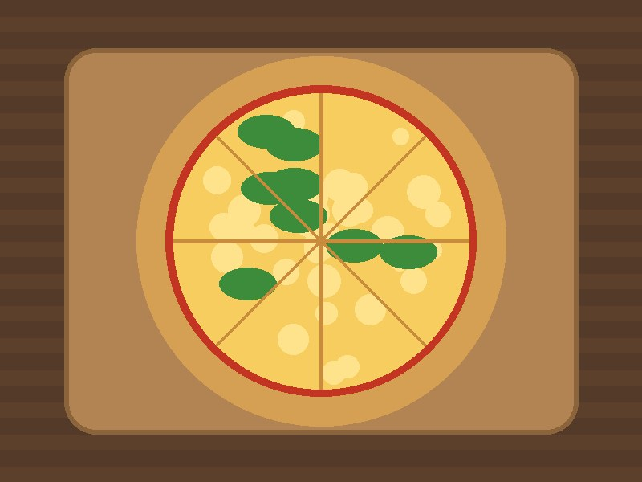
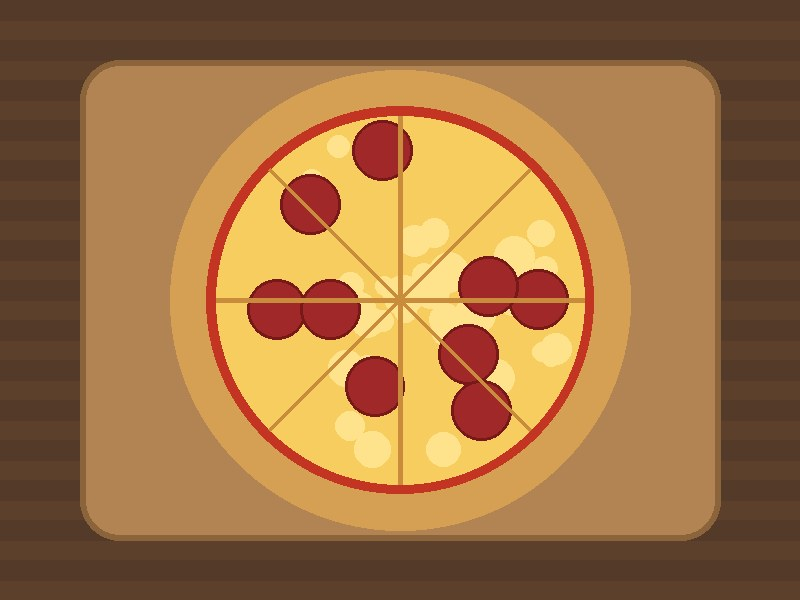
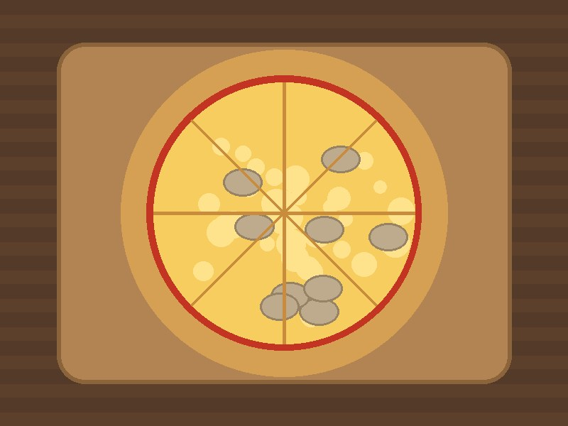
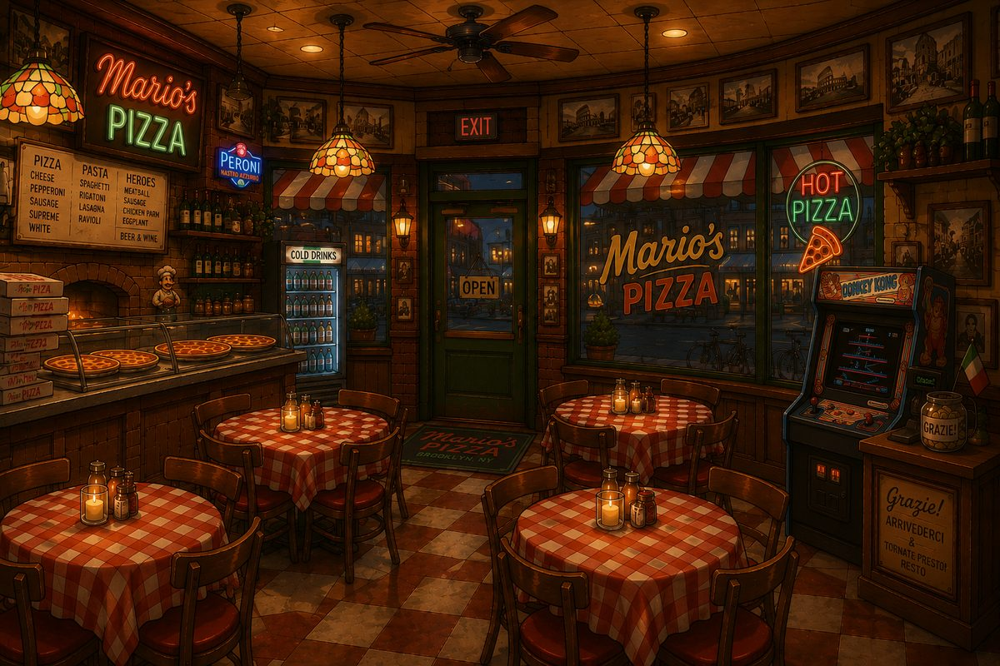

Willkommen
Seit 1992 gibt es Mario's Pizza an der Court Street in Brooklyn. Aus der kleinen Familienpizzeria ist ein Treffpunkt für das ganze Viertel geworden. Vor kurzem hat Mario, der früher als Klempner gearbeitet hat, den Laden übernommen und führt ihn jetzt mit viel Herzblut weiter.
Gebacken wird nach dem Rezept seiner Nonna: Der Teig ruht lange, die Tomatensauce ist selbst gemacht und jede Pizza kommt frisch aus dem Steinofen. Ob im Gastraum, zum Mitnehmen oder als Lieferung: Buon appetito!
Speisekarte
Unsere beliebtesten Pizzen (30 cm, aus dem Steinofen):
-
Margherita – Tomaten, Mozzarella, Basilikum – 12,50 $

Pizza Margherita -
Pepperoni – Tomaten, Mozzarella, Pepperoni-Salami – 14,00 $

Pizza Pepperoni -
Funghi – Tomaten, Mozzarella, frische Champignons – 14,00 $

Pizza Funghi - Mario's Special – Tomaten, Mozzarella, Salami, Schinken, Paprika, Oliven – 16,50 $
- Luigi's Verde – Mozzarella, Spinat, Zucchini, Rucola, Parmesan – 15,00 $
- Quattro Formaggi – Mozzarella, Gorgonzola, Parmesan, Provolone – 15,50 $
Getränke
- Limonata – hausgemachte Zitronenlimonade – 3,50 $
- San Pellegrino – Mineralwasser mit Kohlensäure – 3,00 $
- Espresso – nach dem Essen, stark und klein – 2,50 $
So bestellst du
- Pizza aus der Speisekarte aussuchen
- Anrufen oder vorbeikommen – Luigi nimmt die Bestellung auf
- Genießen
Öffnungszeiten
- Montag
- Ruhetag
- Dienstag bis Freitag
- 11:30 – 14:00 Uhr und 17:00 – 22:00 Uhr
- Samstag
- 12:00 – 23:00 Uhr
- Sonntag und Feiertage
- 12:00 – 21:00 Uhr
Anfahrt
Du findest uns an der Ecke Court Street / Montague Street in Brooklyn Heights, nur zwei Blocks vom Borough Hall entfernt. Mit der Subway fährst du mit der Linie 2, 3, 4 oder 5 bis Borough Hall. Parkplätze sind in der Gegend knapp, deshalb empfehlen wir dir die Anreise mit der Subway oder dem Fahrrad.

Kontakt
Mario's PizzaCourt Street / Montague Street
Brooklyn, NY 11201, USA
Telefon: +1 718 555 0192
E-Mail: info@marios-pizza.nyc